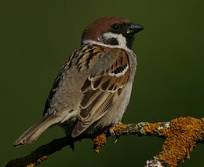
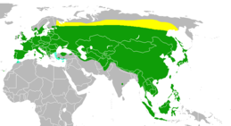

A mezei veréb (Passer montanus) a madarak (Aves) osztályának verébalakúak (Passeriformes) rendjébe és a verébfélék (Passeridae) családjába tartozó faj. A Magyar Madártani és Természetvédelmi Egyesület 2007-ben „Az év madarává” választotta.
Élőhelye a magas északot leszámítva egész Európa, egész Szibéria Japánig és Kínáig, továbbá valószínűleg Észak-Afrika is. Közép- és Délnyugat-Ázsiában, Indiában, Szumátra, Jáva, Borneó és Tajvan szigetén különböző alfajokban fordul elő. Szabad mezők, lomberdők lakója. Az emberi lakások környékét leginkább télen keresi fel. Eredeti elterjedési területén kívül a következő területekre telepítették be: Fülöp-szigetek, Mariana-szigetek, Kis-Szunda-szigetek, Celebesz, Ausztrália, az Egyesült Államok középső része, Malajzia keleti része és Szingapúr. Nem sikerült meghonosítani Új-Zélandon és a Bermuda-szigeteken.
Faodvakban, elvétve háztetőkön fészkel, 2–3-szor évenként, de elfoglaja a fecskefészkeket, a hasznos odúlakók részére kihelyezett mesterséges fészekodvakat is. Az első fészekalj áprilisban, a második júniusban, a harmadik pedig augusztusban teljes. Fészke gyökerekből, szénából és tollakból van magasra halmozva. Fészke kerek, melyet oldalbejáróval épít. 5–6 tojása szennyesfehér alapon sűrűen borítva szürke és szürkésbarna pontokkal és foltokkal tarkított.
(Forrás: https://hu.wikipedia.org/wiki/Mezei_ver%C3%A9b)